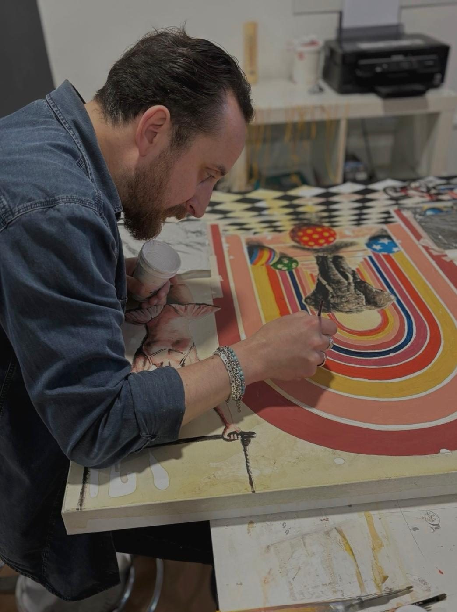

Archiv · 2026
Beyond the Frame
Mit Arbeiten von Sante Muro
- Ausstellung
- 22.10. – 21.11.2026
- Ort
- Rotebühlstraße 87, Stuttgart
- Vernissage
- 22.10.2026, 18–21 Uhr
Tauche ein in eine Welt, in der sich Architektur, Fantasie und Erinnerung verweben.
Sante Muros Gemälde öffnen sich zu traumhaften Räumen: Bögen und Treppen, Pools und Schachbrettböden, bevölkert von wilden Tieren, Figuren der Antike und Ikonen der Popkultur.
Zur aktuellen AusstellungÜber den Künstler
Sante Muro

Sante Muro wurde 1978 in Polla (Salerno, Italien) geboren. Er lebt in Satriano di Lucania (Potenza) und arbeitet in seinem Atelier in Potenza.
Als autodidaktischer Maler hat ihn die Liebe zur Kunst nie losgelassen. Er begann mit dem Studium des klassischen und zeitgenössischen Porträts und kam über strukturierte Stadtlandschaften zu seinen heutigen traumhaften Visionen von Innenräumen.
Er ist außerdem Muralist mit großformatigen öffentlichen Arbeiten in mehreren Orten der Basilikata und hat an zahlreichen Gruppen- und Einzelausstellungen in Italien und weltweit teilgenommen.
In seinen eigenen Worten
Ich bin ein italienischer zeitgenössischer Künstler mit einem ungewöhnlichen Hintergrund: Ursprünglich bin ich ausgebildeter Ingenieur.
Diese doppelte Identität prägt meine künstlerische Sprache: Sie verbindet Präzision in Raum, Perspektive und Architektur mit der Freiheit von Fantasie und Gefühl. Meine Arbeit erkundet das Gleichgewicht zwischen Struktur und Traum und verwandelt oft vertraute Elemente wie Architektur, Wasser, Tiere und menschliche Figuren in symbolische Erzählungen.
Am meisten fasziniert mich der Moment, in dem das Gewöhnliche unerwartet wird, in dem Landschaften zu psychologischen Räumen werden und Architektur zu Erinnerung.
Meine Inspiration kommt aus vielen Quellen, darunter Musik, Kino, Fotografie und zeitgenössische Bildkultur. Die mediterrane Landschaft ist in meiner Arbeit ständig präsent, nicht als realer Ort, sondern als Landschaft, gefiltert durch Erinnerung und persönliche Wahrnehmung.
Besonders interessiert mich, wie Gefühl, Fantasie und Erfahrung die Wirklichkeit verwandeln und visuelle Räume schaffen, in denen die Betrachtenden ihre eigenen Bedeutungen und Verbindungen finden können.
Sante Muro